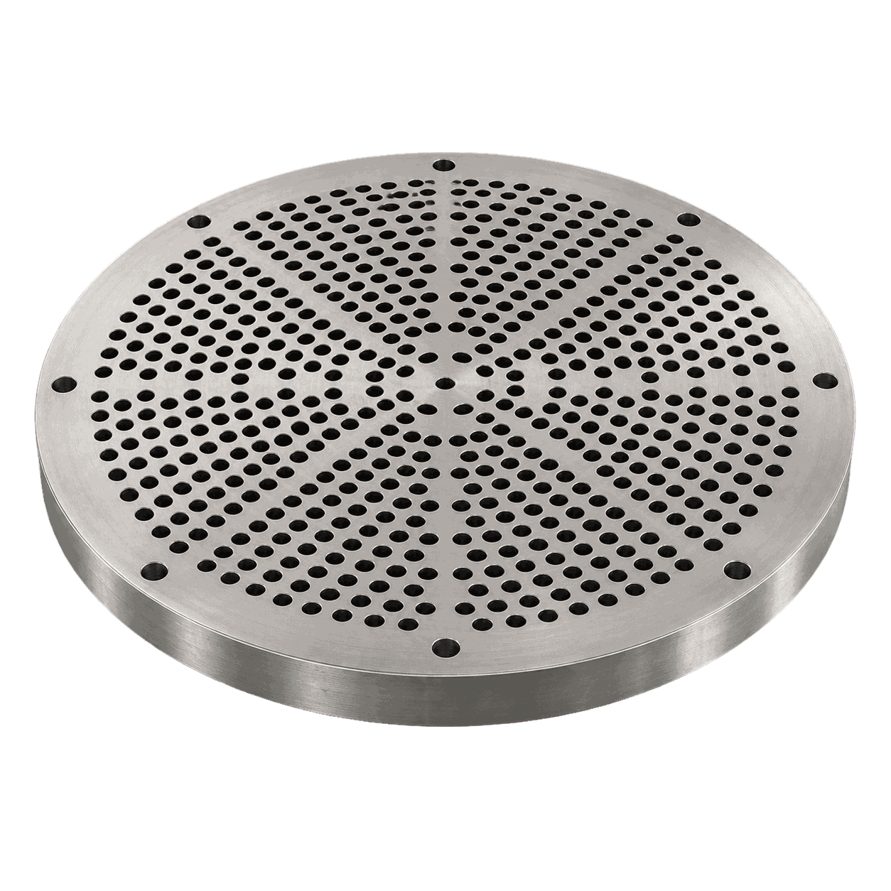
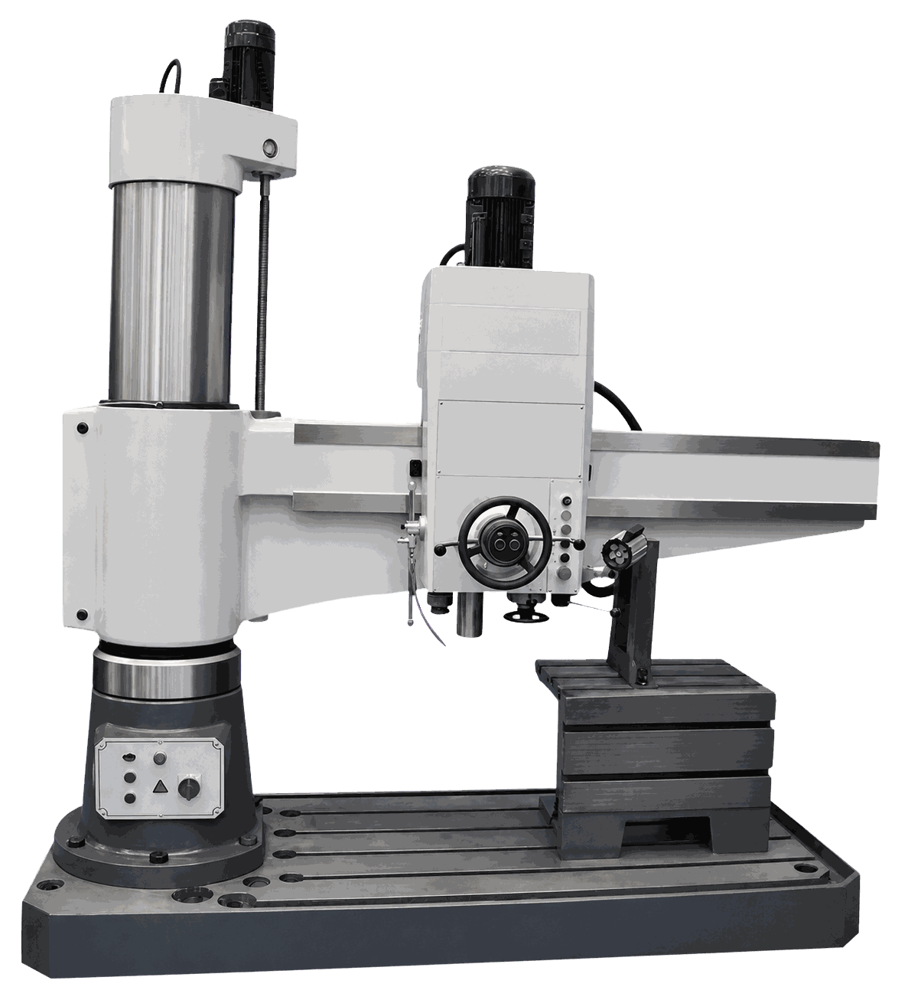
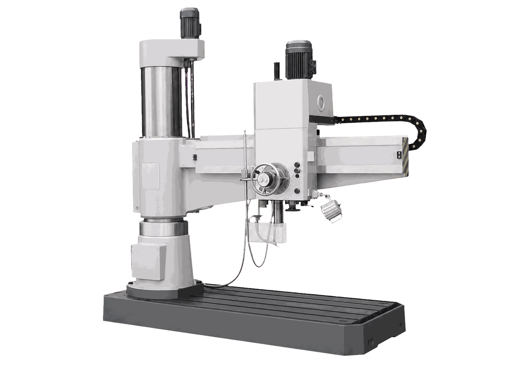
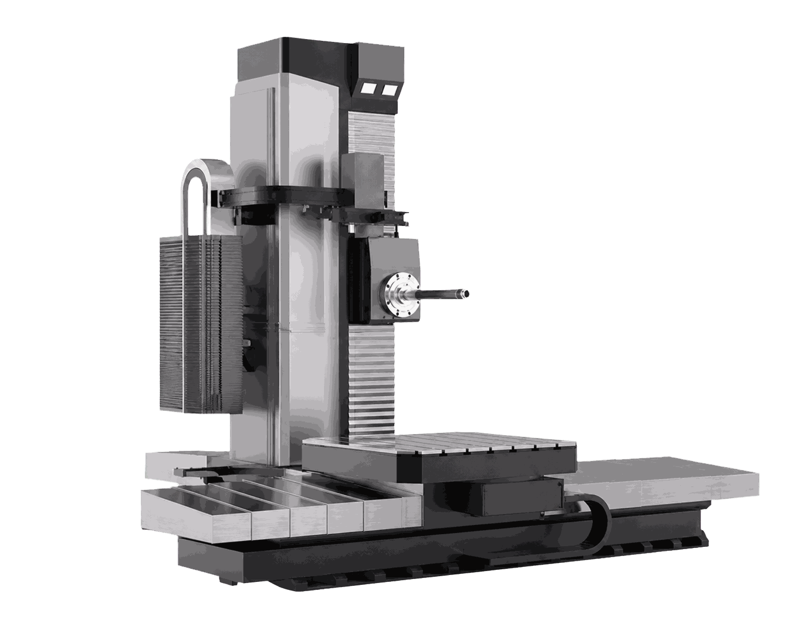
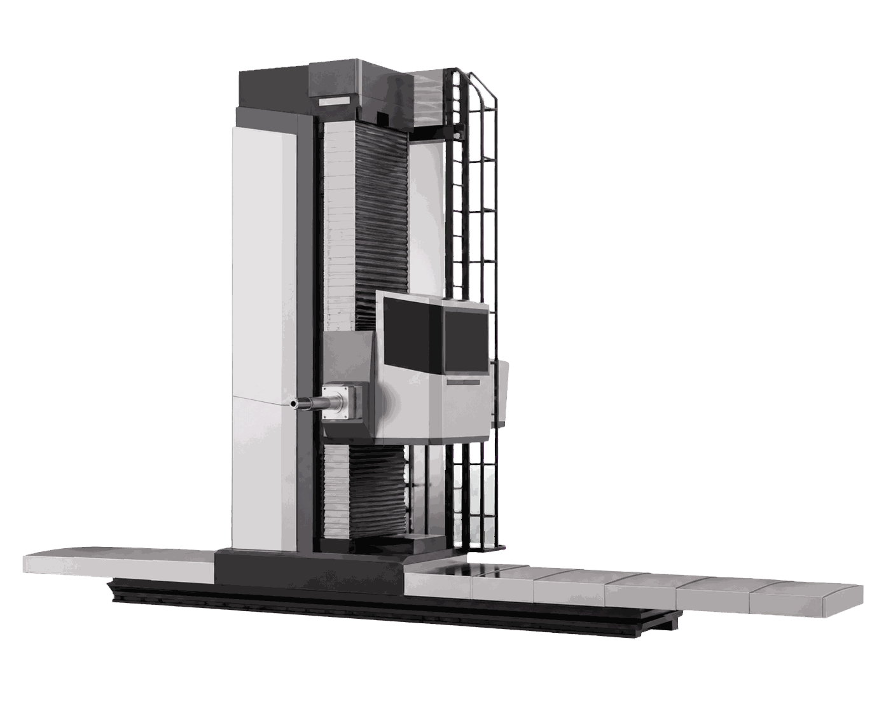

01
Портальное фрезерование
Обрабатывает крупные плиты, рамы и длинномерные детали с сохранением геометрии по всей рабочей зоне.

Построить маршрут обработки детали «Трубная решётка» с понятным разделением операций и подбором оборудования под каждую операцию.
Параметры ориентировочные. Финальная технология и состав оборудования уточняются по чертежу, материалу и программе выпуска.
Обрабатывает крупные плиты, рамы и длинномерные детали с сохранением геометрии по всей рабочей зоне.
Формирует крепёжные, стыковочные и технологические отверстия по заданной схеме.
Выполняет растачивание крупных отверстий и длинных посадочных зон на тяжёлой детали.
Финишно выравнивает крупные плоскости и базовые поверхности после фрезерования.





